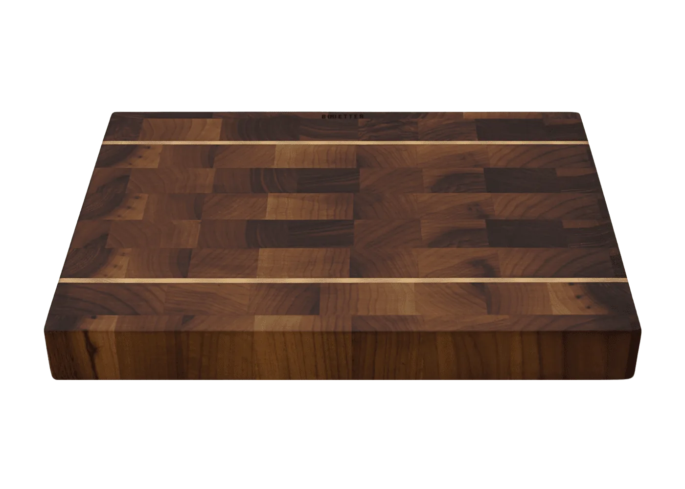
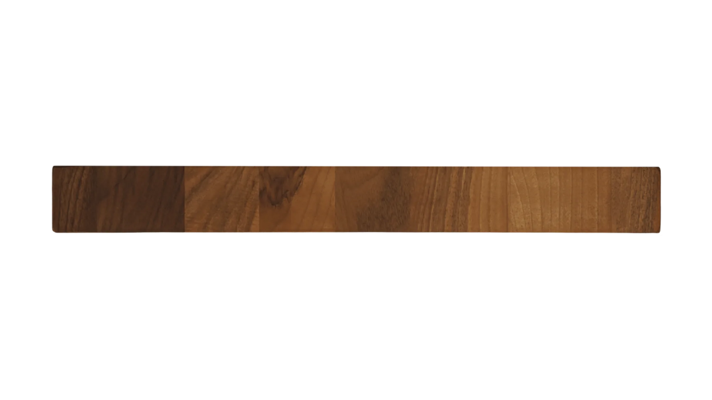
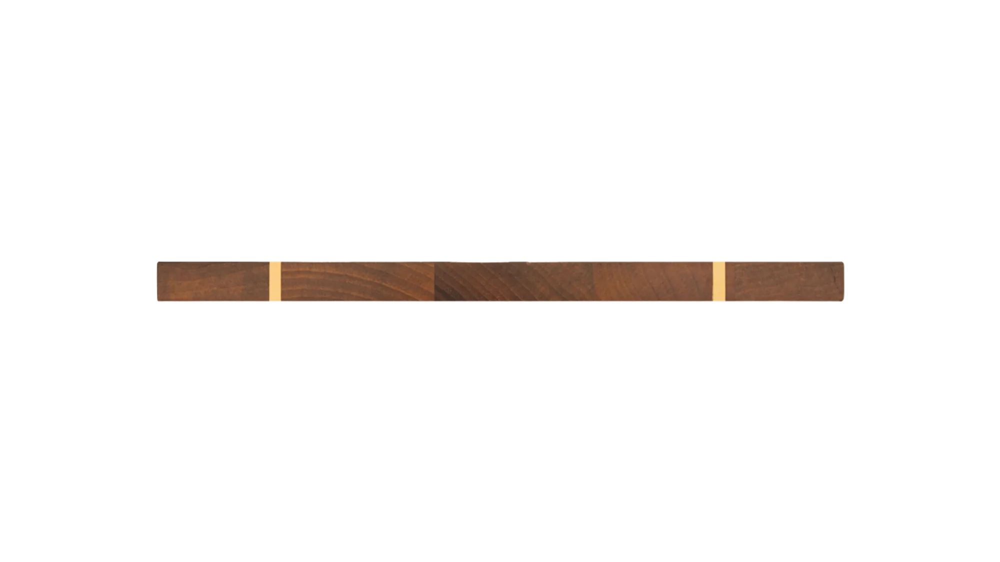
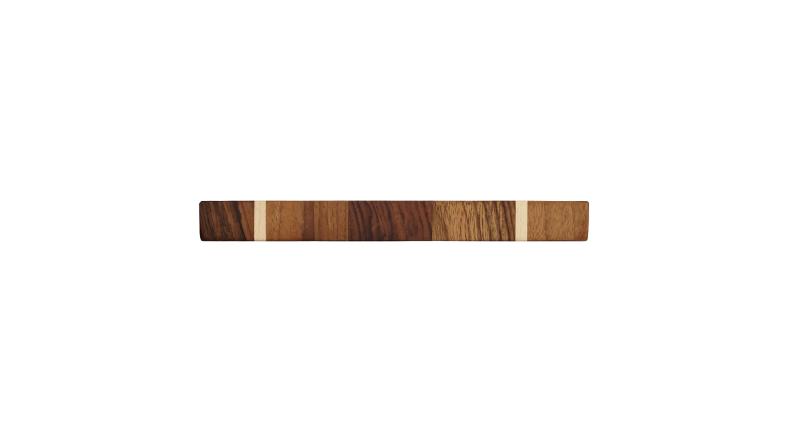
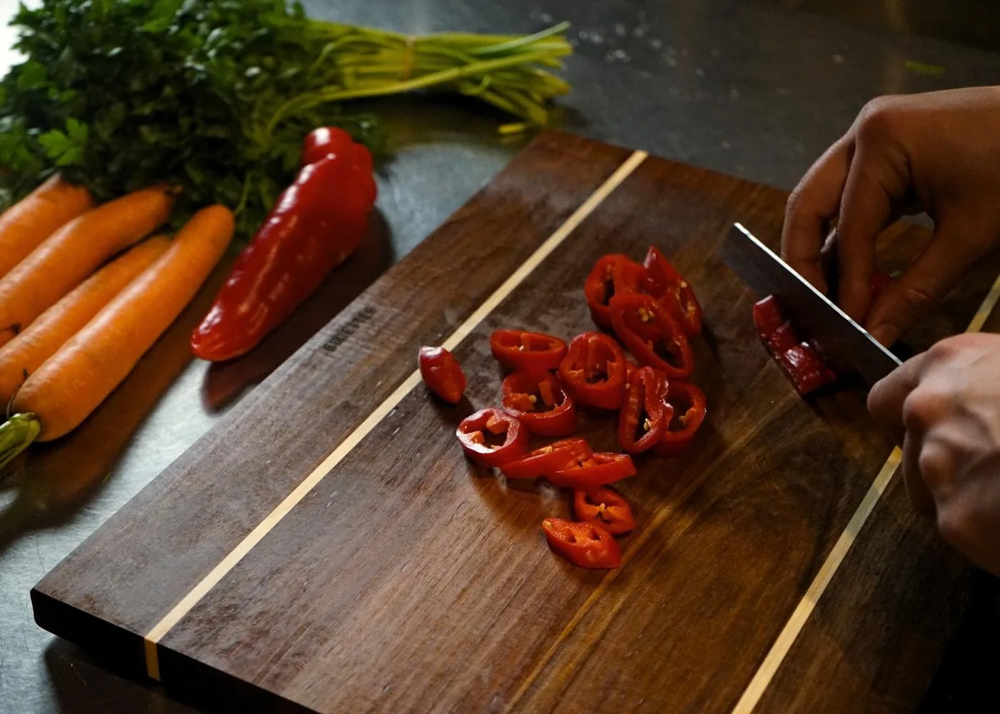

Antibakteriell– von Natur aus.
Eiche und Walnuss enthalten natürliche Gerbsäure. Sie wirkt antibakteriell – ohne Chemie, ohne Beschichtung. Und weil sich Schnitte im Stirnholz wieder schließen, entstehen kaum tiefe Rillen.
CHOB PRO in Walnuss. Stirnholz, Ahornadern, gefertigt in Deutschland.

Fläche und Höhe maßstabsgetreu. Gestrichelt: das größte Maß der Kollektion.
Seitenansicht · Hard Edge
Scharfe Kanten, keine Schnörkel. Von der Seite siehst du, was du bekommst: 5 cm Stirnholz oder 2 cm für jeden Tag.



Alle drei Kanten im selben Maßstab: PRO von der langen Seite (45 cm), SOLID und LITE von der Stirnseite (33 und 20 cm).
Material · Was in dein Essen kommt
Was auf dem Brett liegt, landet im Essen. Deshalb schneidest du bei uns auf massivem Holz – nicht auf Kunststoff.

Eiche und Walnuss enthalten natürliche Gerbsäure. Sie wirkt antibakteriell – ohne Chemie, ohne Beschichtung. Und weil sich Schnitte im Stirnholz wieder schließen, entstehen kaum tiefe Rillen.
Kunststoffbretter verlieren mit jedem Schnitt winzige Partikel, die mit ins Essen gelangen können. Ein CHOB ist aus massivem Holz – da ist kein Plastik, das sich abschneiden lässt.
Studie: Yadav et al., „Cutting Boards: An Overlooked Source of Microplastics in Human Food?“, Environmental Science & Technology, 2023.
Instagram, YouTube und TikTok zusammengerechnet. Wer mehreren Kanälen folgt, zählt mehrfach.
Food-Creator zeigen ihre Küchen – und darin liegt ein CHOB. Kein Sponsoring-Requisit, sondern ein Werkzeug, das jeden Tag schneidet.
Creator · nach Reichweite
Tipp auf eine Karte: Du landest direkt auf dem Kanal. Die drei Punkte zeigen alle Links.